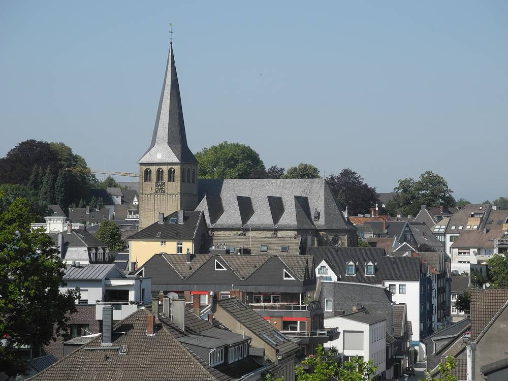

독일 메트만 시민에너지협동조합, 테니스장 지붕에 첫 태양광…60kWp 13일 전력망 연결

창립 얼마 안 된 협동조합이 직접 짓고 운영하는 첫 발전소, 모듈 130장으로 한 해 약 6만kWh…"이제 시작일 뿐"
독일 노르트라인베스트팔렌주 메트만의 시민에너지협동조합(BEM)이 처음으로 직접 지은 태양광 발전소를 오는 13일 전력망에 연결한다. 발전소는 메츠카우젠 테니스클럽이 가진 실내 테니스장의 남향 지붕에 들어섰으며, 모듈 130장으로 설비 용량은 60kWp, 예상 연간 발전량은 약 6만kWh다. 협동조합은 넓은 지붕을 가진 클럽과 계약을 맺어 설치 자리를 확보했고, 건설부터 운영까지 스스로 맡는다. 창립한 지 얼마 되지 않은 이 협동조합은 예정보다 시간이 더 걸렸지만 첫 목표를 이뤘다며, 이번 발전소는 시작일 뿐이라고 밝혔다.
시민에너지 관점
60kWp는 작은 숫자지만, 주민이 돈을 모아 동네 체육시설 지붕을 빌리고 수익을 다시 조합원에게 돌리는 구조가 처음 문을 열었다는 데 뜻이 있다. 독일 시민에너지가 큰 힘을 갖게 된 것도 이렇게 학교·체육관·교회 지붕 하나에서 출발한 협동조합이 하나둘 늘어난 결과다. 작은 사업은 돈이 안 된다는 걱정도 있지만, 지붕 주인은 임대료를, 조합원은 배당을, 지역은 깨끗한 전기를 얻으니 셈법이 다르다. 우리 동네 마을회관과 체육관 지붕부터 주민 협동조합이 맡는 길을 지자체가 열어 주자.
출처: RP Online 2026-11-08 Thomas Geuchen 원문 보기
창간 전 시험 발행 기사입니다.
独メットマンの市民エネルギー協同組合、テニス場の屋根に初の太陽光…60kWpを13日に系統接続
設立間もない協同組合が自ら建設・運営する初の発電所、パネル130枚で年間約6万kWh…「これは始まりにすぎない」
ドイツ・ノルトライン＝ヴェストファーレン州メットマンの市民エネルギー協同組合(BEM)が、初めて自ら建設した太陽光発電所を13日に電力系統へ接続する。発電所はメッツカウゼン・テニスクラブが所有する屋内テニス場の南向きの屋根に設けられ、パネル130枚で設備容量は60kWp、年間発電量は約6万kWhを見込む。協同組合は広い屋根を持つクラブと契約して設置場所を確保し、建設から運営まで自ら担う。設立から日の浅いこの協同組合は、予定より時間はかかったものの最初の目標を達成したとし、今回の発電所は始まりにすぎないと述べた。
市民エネルギーの視点
60kWpは小さな数字だが、住民が資金を集めて地域の体育施設の屋根を借り、収益を組合員に還元する仕組みが初めて動き出したことに意味がある。ドイツの市民エネルギーが大きな力を持つようになったのも、学校や体育館、教会の屋根一つから始まった協同組合が少しずつ増えてきた結果だ。小規模事業は採算が合わないという懸念もあるが、屋根の持ち主は賃料を、組合員は配当を、地域はクリーンな電気を得るのだから計算が違う。まずは地域の公民館や体育館の屋根から住民協同組合が担える道を、自治体が開くべきだ。
出典: RP Online 2026-11-08 Thomas Geuchen 原文を読む
創刊前の試験発行記事です。
德国梅特曼公民能源合作社在网球馆屋顶建成首座太阳能电站…60kWp将于13日并网
成立不久的合作社自建自营的第一座电站，130块组件年发电约6万kWh…"这只是开始"
德国北莱茵-威斯特法伦州梅特曼的公民能源合作社(BEM)将于13日把首座自建太阳能电站接入电网。电站建在梅茨考森网球俱乐部所属室内网球馆朝南的屋顶上，共130块组件，装机容量60kWp，预计年发电量约6万kWh。合作社与拥有大面积屋顶的俱乐部签约取得安装场地，从建设到运营均由自己负责。这家成立不久的合作社表示，虽然比预期多花了一些时间，但已实现第一个目标，这座电站只是开始。
市民能源视角
60kWp的规模虽小，但居民集资租用社区体育设施屋顶、再把收益返还给社员的模式就此起步，意义重大。德国公民能源之所以拥有强大力量，也正是从学校、体育馆、教堂的一块屋顶起步的合作社逐渐增多的结果。有人担心小项目不赚钱，但屋顶主人得到租金，社员得到分红，社区得到清洁电力，账要这样算。地方政府应当为居民合作社打开道路，先从村民会馆和体育馆的屋顶做起。
来源: RP Online 2026-11-08 Thomas Geuchen 查看原文
本文为创刊前试发行文章。
Mettmann Citizen Energy Co-op in Germany Puts First Solar Array on Tennis Hall Roof, 60 kWp to Connect on November 13
Young co-op's first self-built, self-run plant uses 130 modules for about 60,000 kWh a year — "only the beginning"
The citizen energy cooperative of Mettmann (BEM) in Germany's North Rhine-Westphalia will connect the first solar plant it has built itself to the grid on November 13. The array sits on the south-facing roof of the indoor tennis hall owned by Tennis-Club Metzkausen and uses 130 modules for a capacity of 60 kWp, with expected annual output of about 60,000 kWh. The cooperative secured the site through a contract with the club, which has a large roof, and will handle everything from construction to operation itself. The young cooperative said that although the project took longer than hoped, it has reached its first milestone, and that this plant is only the beginning.
Citizen Energy View
Sixty kilowatts is a small number, but what matters is that a model has opened in which residents pool money, rent the roof of a local sports facility and return the earnings to members. German citizen energy grew powerful in exactly this way, as cooperatives that began with a single school, gym or church roof multiplied one by one. Some worry that small projects do not pay, but the arithmetic changes when the roof owner gains rent, members gain dividends and the community gains clean power. Local governments should open the way for residents' cooperatives, starting with the roofs of village halls and gymnasiums.
Source: RP Online 2026-11-08 Thomas Geuchen Read the original
This article was published during the trial period before launch.